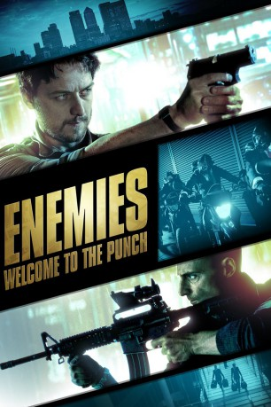
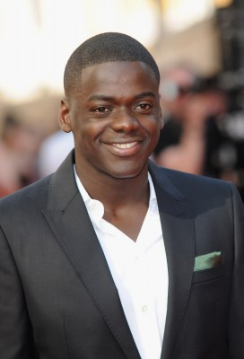

#958 Enemies - Welcome to the Punch
Alternativ: Welcome to the Punch
 
 IMDB-Wertung: 6.1 / 10
IMDB-Wertung: 6.1 / 10  Metascore: 49
Metascore: 49 
Detective Max Lewinsky hat noch eine Rechnung offen: Vor Jahren entkam ihm der Gangster Jacob Sternwood und flüchtete ins sichere Ausland wie auch in eine neue Identität. Als dessen Sohn Ruan bei einem Raubüberfall angeschossen wird und in die Hände der Polizei fällt, sieht sich Jacob genötigt, aus dem selbstgewählten Exil nach London zurückzukehren, um den Sohn zu befreien. Lewinsky weiß um den Trumpf in seiner Hand und wittert die Chance, Jacob Sternwood endlich seiner gerechten Strafe zu überführen. Doch dann werden die Karten neu gemischt, und Lewinsky und Sternwood sehen sich gezwungen, Hand in Hand zu arbeiten. Aber dieser Deal ist zeitlich begrenzt…
Jahr: 2013
Dauer: 99 Minuten
FSK: 16
Land: England Studio: Square One EntertainmentTonspuren: DTS - ,
Untertitel: Deutsch,
Auflösung: 1080p (1920x800) Größe: 6246 MB
Genre: Action, Krimi, Thriller
Regisseur: Eran Creevy
Drehbuch: Eran Creevy
Soundtrack: Harry Escott
Darsteller:
 James McAvoy als Max Lewinsky
James McAvoy als Max Lewinsky Mark Strong als Jacob Sternwood
Mark Strong als Jacob Sternwood Andrea Riseborough als Sarah Hawks
Andrea Riseborough als Sarah Hawks Johnny Harris als Dean Warns
Johnny Harris als Dean Warns Daniel Mays als Nathan Bartnick
Daniel Mays als Nathan Bartnick David Morrissey als Thomas Geiger
David Morrissey als Thomas Geiger Peter Mullan als Roy Edwards
Peter Mullan als Roy Edwards Natasha Little als Jane Badham
Natasha Little als Jane Badham-  Daniel Kaluuya als Juka Ogadowa
 Ruth Sheen als Iris Warns
Ruth Sheen als Iris Warns Jason Flemyng als Harvey Crown
Jason Flemyng als Harvey Crown Elyes Gabel als Ruan Sternwood
Elyes Gabel als Ruan Sternwood Robert Portal als Robert Wiseman
Robert Portal als Robert Wiseman- Jason Maza als Luke
- Dannielle Brent als Karen Edwards
 Johnny Palmiero als Officer in Cagoule
Johnny Palmiero als Officer in Cagoule- Amanda Rawnsley als Desk Clerk
- Alastair G. Cumming als Spin Doctor
 Cathy Murphy als Nurse
Cathy Murphy als Nurse- Lauren Garnham als Journalist
 Steve Oram als Journalist
Steve Oram als Journalist- Joseph Cinko als Young Boy
- Ray De-Haan als The Wrong Man
- Oliver Silver als Otis Blake
- George Keywood als George - Young Boy , uncredited
- Nasir Mohamed als Detective , uncredited
- Mike Parish als Reporter , uncredited
 Jay Simpson als Barber
Jay Simpson als Barber- Seun Shote als Joseph Ojogo
- David Michaels als Henry Callaghan
- Jonell Elliott als Chief Flight Attendant
- Simon Allix als Flight Attendant
- Claire Hearnden als Flight Attendant
- John White als Security Guard
- Tom Turner als Club Owner
- Simon Gregor als Moustache
- Jordan Londe als Man With Flowers
- Ellie Darcey-Alden als 12-year Old Girl
- Leo Fenwick als Armed Airport Policeman
- Kris Johnson als Nightclub doorman
- Steven Borrie als News Camera Person , uncredited
- Matt Butcher als Hospital Visitor , uncredited
- Ginny Dee als Hospital Visitor , uncredited
- Tracey Greenwood als Hospital Administrator , uncredited
- Andy Joy als Street Footballer , uncredited
- Chonradee Kulthap als Cleaner , uncredited
- Matthew David McCarthy als Doctor , uncredited
- Pete Meads als TV Cameraman , uncredited
- Theresa Pope als Doctor , uncredited
- Elise Quevedo als Political Journalist , uncredited
Datei: X:\2013(A-F)\Enemies - Welcome to the Punch (2013, FSK16, 1920x800).mkv seit 28.04.2015
Festplatte: HD 2012(N-Z)-2013(A-H)
 Es gibt insgesamt 127 Filme in der Gruppe '2013(A-F)'
Es gibt insgesamt 127 Filme in der Gruppe '2013(A-F)'